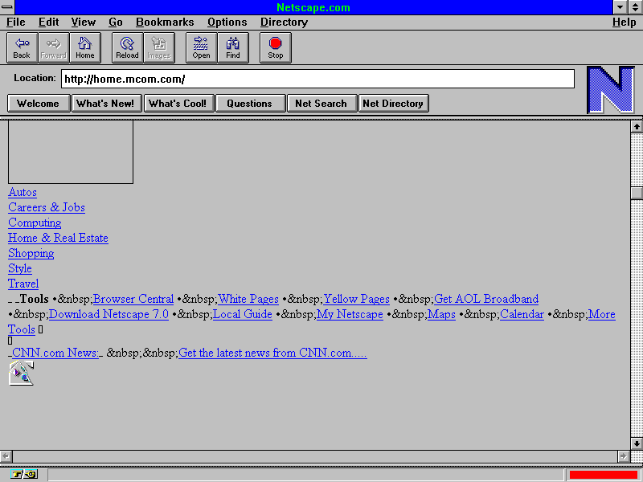
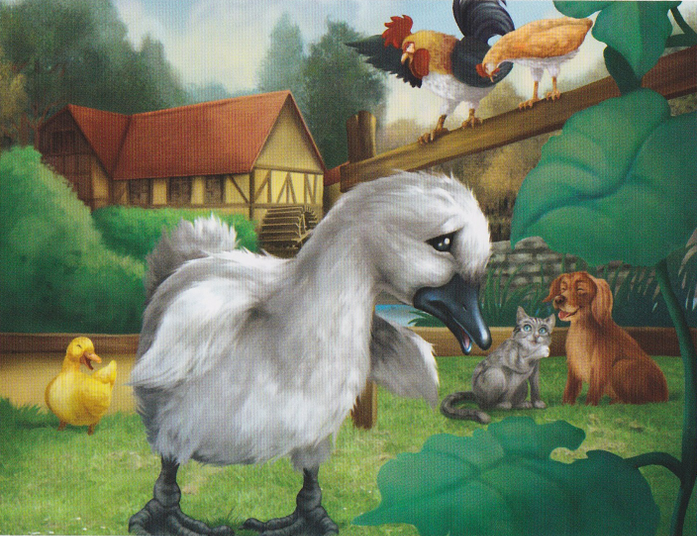
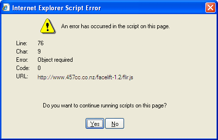
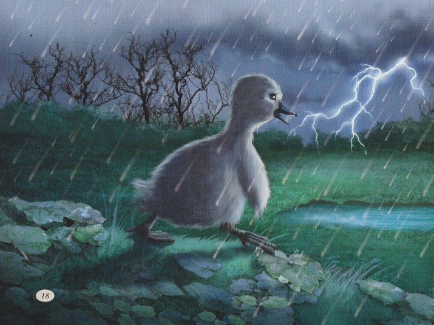
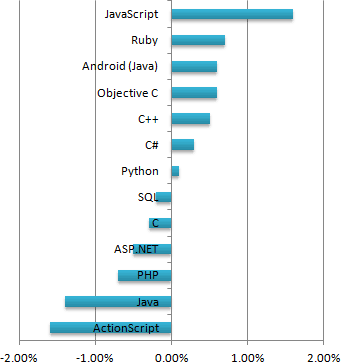

JavaScript
The Ugly Duckling
Introduction
- A brief history of JavaScript
- Humble beginnings
- Most popular language today
- Arguably the most important
- Flimsy duck metaphor
About me
- Ian Watson
- Nearly 10 years @ Amaze
- Flash developer
- Oh my God they killed Flash. You bastards!
- JavaScript noob
1995
- World Wide Web had taken off
- Netscape Navigator ruled
- IE didn't exist
- First browser war looming
Netscape Navigator 1.0
Brendan Eich
- CTO of Mozilla Corporation
- Father of JavaScript
The Ugly Duckling
The really bad bits
- Global variables
- Overloaded + operator. 5 + "5" = "55"
- Automatic semi-colon insertion
- Broken typeof
- Type coercion rules
- false, null, undefined, NaN
- Broken floating point numbers. 0.1 + 0.2 != 0.3
JavaScript is picked on
Error!
JavaScript runs away
Dreamweaver rollover
function MM_findObj(n, d) { //v4.01
var p,i,x; if(!d) d=document; if((p=n.indexOf("?"))>0&&parent.frames.length) {
d=parent.frames[n.substring(p+1)].document; n=n.substring(0,p);}
if(!(x=d[n])&&d.all) x=d.all[n]; for (i=0;!x&&i<d.forms.length;i++) x=d.forms[i][n];
for(i=0;!x&&d.layers&&i<d.layers.length;i++) x=MM_findObj(n,d.layers[i].document);
if(!x && d.getElementById) x=d.getElementById(n); return x;
}
function MM_swapImage() { //v3.0
var i,j=0,x,a=MM_swapImage.arguments; document.MM_sr=new Array; for(i=0;i<(a.length-2);i+=3)
if ((x=MM_findObj(a[i]))!=null){document.MM_sr[j++]=x; if(!x.oSrc) x.oSrc=x.src;x.src=a[i+2];}
}
Standardised by ECMA
- 1st standardised in 1997
- 1999 revision is what we use today
Jesse James Garrett
- What was he when he wrote the whitepaper?
- UX Designer
- Described AJAX (2005)
JavaScript libraries, thousands of 'em
“Used by over 65% of the 10,000 most visited websites, jQuery is the most popular JavaScript library in use today”wikipedia
Not an ugly duckling

Chrome
Chrome Mission Statement
google, 2008“We realized that the web had evolved from mainly simple text pages to rich, interactive applications and that we needed to completely rethink the browser.
What we really needed was not just a browser, but also a modern platform for web pages and applications, and that's what we set out to build.”
New browser wars
- Attacked IE market share
- JavaScript performance
- Implement new features
- Aggressive release cycles
- Huge improvement to debugging tools
Flash in the pan
Today
- Most popular on github
- Most popular on stackoverflow.com
- Most important
Ubiquitous
- Anywhere there's a web browser
- Phonegap, node webkit, Adobe AIR
- Web technologies driving the desktop
- Server-side (node)
- Potential audience of billions
- No other language has the same reach
It's not so bad
Douglas Crockford“Hidden under a huge steaming pile of good intentions and blunders is an elegant and expressive programming language”
Douglas Crockford

- JavaScript architect, PayPal
- JavaScript: The Good Parts
- JSON, JSLint and JSMin
Beautiful swan?
Bad ass swan!
THE END
- http://delicious.com/net.uk.sweet/brownbag/
- http://lab.hakim.se/reveal-js/